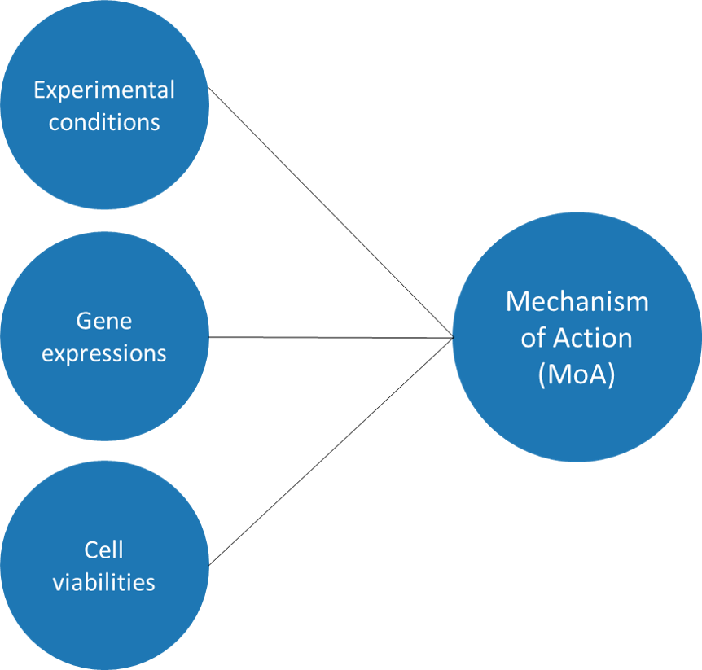
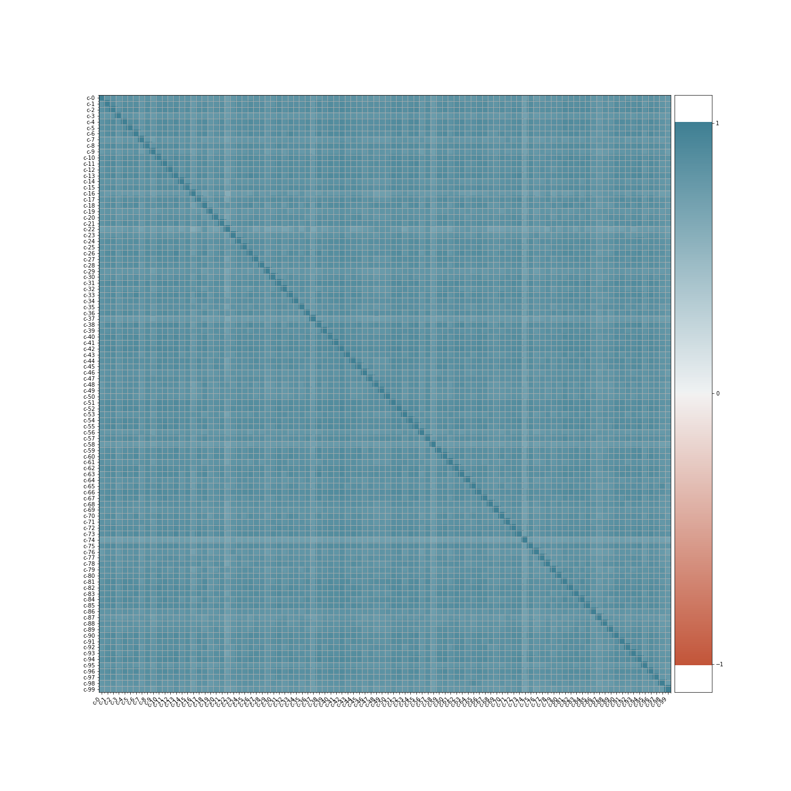

Understanding the mechanism of action (MoA) of drug candidates is becoming increasingly important in the process of drug discovery. To determine the MoA of newly-developed therapeutics, cell-based assays that measure gene expression and cell viability upon drug exposure are commonly employed in combination with large databases of known drug/cellular responses/MoA correlations. Predicting the MoA of drug candidates from such data requires robust data analysis and machine learning approaches.
In search of such approaches, the Laboratory for Innovation Science at Harvard (LISH), Connectivity Map (a project within the Broad Institute of MIT and Harvard) and the NIH Common Funds Library of Integrated Network-Based Cellular Signatures (LINCS) recently made a large multi-label dataset of cellular responses and MoA publicly available.
|
The dataset for this project maps the cellular responses (gene expression and cell viability) of 100 cell lines to more than 3000 drugs (at different doses and exposure times) and provides a multi-label classification for the drugs' mechanism of action (MoA). Dataset Jupyter Notebook for this sectionData splittingThe dataset was split into a training and testing subset by the dataset providers. The training subset contained 23816 datapoints, while the testing subset had 3982 datapoints and the mechanism of action (MoA) data was omitted. |
 |
Treatment type: Cells were either treated with a compound of interest (denoted as 'trt_cp') or with a control perturbation (denoted as 'ctl_vehicle', control perturbations have no MoAs). Information about the drugs used was not provided in the dataset.
Drug dosage: The drug dose ('cp_dose') was also varied across the dataset with a high ('D1') and a low ('D2') dose (undisclosed quantities) employed for each compound of interest.
Exposure time: The duration of the treatment ('cp_time') was either 24, 48 or 72 hours and each timespan was employed for each drug.
Overall, each compound of interest was, therefore, used to treat cell lines under 6 different conditions (2 varying doses x 3 varying exposure time). All measurements were carried out in duplicate and the cell response values were averaged over the two treatments.
Importantly, the distribution of samples treated under different treatment conditions was comparable across the training and testing datasets (as shown in the sunburst charts below).
Data collection: Gene expression data for 772 genes was collected using a modified version of the L1000 assay. The L1000 assay is a high-throughput gene expression assay that measures the mRNA transcript abundance of "landmark" genes from human cells. i.e., genes that are a highly representative subset of the transcriptome. All data was normilized using a quatile normalization followed by a robust z-score normalization. Gene names were obfuscated by the dataset providers and, instead, genes are labelled as g-0 through g-771.
|
Data distrubution: The gene expressions data (18'384'441 datapoints) is symetrically distributed and centered around zero (Q1 = -0.492, Q2 = 0.000, Q3 = 0.507). Hence, no additional normalization steps will be used to preprocess the gene expressions data prior to machine learning model construction. |
Cross-correlations: The cross-correlation between all pairs of gene expressions in the dataset was calculated. The majority of correlation coefficients (~63%) were lower than |0.2|, while only ~11% were higher than |0.6| and ~1% were higher than |0.8|. This suggests limited correlation between the over- or underexpression of different genes upon drug exposure, thereby indicating that it is unlikely that the recorded correlations will pose a significant issue in machine learning model development. Nevertheless, a principal component analysis (PCA) is performed below to further investigate this notion and to potentially reduce the gene expression features count. |
Data collection: Cell viability was assessed for 100 cell lines using the Profiling Relative Inhibition Simultaneously in Mixture (PRISM) technique. PRISM is a high-throughput assay, in which cells (typically cancer cell lines) are labelled with a unique 24-nucleotide barcodes, pooled and treated together under the experimental conditions of interest, e.g., treatment type, drug dose, time. Genomic DNA is then isolated from the surviving cells and quatified to determine the surving cells count. All data was normilized using a quatile normalization followed by a robust z-score normalization. Cell line names were obfuscated by the dataset providers and, instead, cell lines are labelled as c-0 through c-99.
|
Data distrubution: Similarly to the gene expression data, the cell viability data (2'381'400 datapoints) was also predominantly normally distributed and centered around zero (Q1 = -0.561, Q2 = -0.005, Q3 = 0.456). However, as can be seen in the histogram below, a notable tail at values around -10 was present. This negative tail feature persists in the cell viability histograms of the majority of the 100 cell lines (when plotted individually, data not shown) and appears genuine. As a consequence of this imbalance, the mean cell viability value is shifted towards negative values (-0.432) compared to the median (-0.005). Nevertheless, as the data was normalized by the dataset providers and because this negative tail might provide valuable insight during the data modelling step, no additional normalization steps will be used to preprocess the gene expressions data prior to machine learning model construction. |
Cross-correlations: The cross-correlation between all pairs of cell viability features in the dataset was calculated. There appears to be significant possitive correlation between all pairs of cell viability variables with the corresponding correlation coefficients ranging between 0.612 and 0.923. This implies that the same treatment conditions (i.e., treatment type, dose and time) have a similar effect on the viability of different cell lines. Therefore, a principal component analysis (PCA) of this set of features is performed below.  |
The mechanism of action (MoA) of each experimental treatment was determined by the dataset providers based on the available literature and cell response data. The compiled MoA data was provided for all treatments in the training dataset, however, it was not made publicaly available for the testing dataset (as the purpose of the dataset competition is to predict the testing dataset MoAs). 206 mechanisms of action (MoAs) were included in the dataset and experimental treatments were labelled with a 1 (treatment has specified MoA) or 0 (treatment does not have specified MoA) for each MoA.
|
Number of MoA per treatment: As mentioned above, cells were either treated with a compound ('trt_cp') or with a control ('ctl_vehicle') perturbation. Drugs can elicite a cellular response (change in gene expression or cell viability) via multiple MoA or, indeed, have no MoA for the treated cell lines, whereas all control treatments have no MoA. In this dataset, the majority of drugs (~57%) had one MoA, followed by drugs with no MoA (~34%) and drugs with 2 or more MoAs (~9%). The lack of MoAs for all control treatments was confirmed. |
Number of treatments eliciting each MoA: To gain further understanding of the MoA data distribution, the number of perturbations that elicited each of the 206 MoAs was also examined.
The majority of MoA (50.5%) were each elicited by a relatively small number of treatments, i.e., less than 40, whereas only a handfull of MoAs were elicited by more than 400 different treatments (total training dataset perturbation = 23816). Hence, the outcome data in the dataset (MoA) is highly imbalanced, which may hinder the prediction of MoA for unseen drugs, especially for MoA classes that are underrepresented in the training dataset (e.g., the thrombin inhibitory MoA, which is only elicited by one treatment in the training dataset).
|
Types of MoAs: To gain understanding of the types of MoA included in the dataset, the Natural language processing toolkit (NLTK) was used to determine the frequency of the different terms used to describe the various mechanisms of action. The 18 most common terms (i.e., terms of frequency higher than 2) are shown in the bar chart on the right. Interestingly, the majority of MoAs (54.4%) were inhibitors. |
Now that the experimental conditions, gene expression, cell viability and mechanism of action data have been individually explored, the relationships between these data will be investigated to gain further understanding of the dataset. Specifically, the relationships between the different features (i.e., experimental conditions, gene expression and cell viability) in the training and testing data and the relationships between these features and the targets (i.e., mechanism of action) in the training data will be analysed.
Jupyter Notebook for this sectionRelationship between experimental conditions and gene expression: To understand whether the experimental conditions (i.e, treatment type, dosage and time) are correlated with differences in overall gene expression, the violin plots below were used. The plots suggests that:
- The distribution of gene expressions for cell lines treated with control perturbations ('ctl_vehicle') or treatment perturbations ('trt_cp') are comparable. Notably, however, the gene expression values for treatment perturbations are centered slightly more thighly around the median (0.000) with a Q1 of -0.488 and a Q3 of 0.502 compared to the cotrol perturbations (median = 0.010, Q1 = -0.528, Q3 = 0.560).
- The distribution of gene expressions for cell lines treated with high dose perturbations ('D1') or low dose perturbations ('D2') are very similar with no notable differences.
- Simiarly, the distribution of gene expressions for cell lines treated for 24 hours ('24'), 48 hours ('48') or 72 hours ('72') are also comparable with no notable differences.
* 500'000 gene expressions plotted for each perturbation to avoid page loading isssues - data is representative of the whole set.
Relationship between experimental conditions and cell viability: To understand whether the experimental conditions (i.e, treatment type, dosage and time) are correlated with differences in overall cell viability, the violin plots below were used. The plots suggests that:
- There are small but notable differences in the cell viability distribution for cell lines treated with control perturbations ('ctl_vehicle') vs. treatment perturbations ('trt_cp'). Specifically, the mean, median and maximum cell viability for cell lines treated with drugs were significantly lowered (by ~0.5 on avearage) when compared to cell lines treated with control perturbations. This suggests that, generally, drug treatments can be attributed with a decrease in the number of cells, which survive a treatment.
- The cell viabilities for cell lines treated with high ('D1') or low ('D2') drug doses are also comparable with the main differences between the two sets of data observed in the corresponding histogram negative tail region (discussed in the cell viability section above). Specifically, an increase in the drug dose appears to be correlated with an increase in the negative tail region count and a small decrease in the mean and maximum cell viability (~0.2 on average). This suggests that, generally, an increase in drug dose can be attributed with a decrease in the number of cells, which survive a treatment.
- Similarly to the dose response data, the differences in cell viabilities for cell lines treated for 24, 48 or 72 hours are predominantly concentrated in the histogram negative tail region. Specifically, an increase in the treatment type appears to be correlated with an increase in the negative tail region count and a small decrease in the mean and maximum cell viabilities (~0.4 per 24 hours on average). This suggests that, generally, an increase in treatment time can be attributed with a decrease in the number of cells, which survive a treatment.
|
Correlations between gene expression and cell viability: The correlations between all pairs of gene expression and cell viability variables in the dataset were calculated and plotted on the histogram on the right. The majority of correlation coefficients (~57%) were lower than |0.4|, however, ~27% were higher than |0.6| and ~15% were higher than |0.8|. This suggest significant correlations between some gene expression and cell viability features, which needs to be considered during the following feature reduction and machine learning steps. Interestingly, the correlations do not appear to be directional, i.e., increased expression of a gene might be correlated with either a higher or a lower cell viability and vice versa. |
Next, the relationships between the features (i.e., experimental conditions, gene expression and cell viability) and the targets (i.e., mechanisms of action, MoAs) was briefly investigated. For simplicity, the MoAs data was summarised as the total number of MoA per treatment (0, 1 or > 2).
Relationship between experimental conditions and number of MoAs: To understand whether the experimental conditions (i.e, treatment type, dosage and time) are correlated with differences in the number of MoAs per treatment perturbation, the bar charts below were used. The plots suggests that:
- As discussed in the initial MoA data analysis section, control perturbations ('ctr_vehicle') have no MoA, whereas treatments ('trt_cp') can have none, one, or more MoAs. Hence, the treatment type ('cp_type') feature is expected to be important for the identification of experimental treatments which have no MoAs (i.e. control perturbations) in the following predictive modeling of the dataset.
- Neither the treatment dose ('cp_dose'), nor treatment time ('cp_time') appear to have a significant effect on the distribution of MoAs within the dataset. This suggests that MoAs are primarily determined by the type of drug used, and less so by other experimental conditions and hence, these features might be less important for modelling of the data.
|
Relationship between gene expressions and number of MoAs: Next, I investigated whether there are any significant differences in the distribution of gene expression values for treatments with zero, one or more mechanisms of action (violin plots on the right). The plots suggest that the gene expressions for treatments with zero and one MoAs are comparably distributed (mean = 0.009 ± 0.001, median = 0.000 ± 0.000, Q1 = -0.476 ± 0.003 and Q3 of 0.491 ± 0.005). The range of gene expression values for treatments elucidation two or more MoAs also has the same mean and median values, however, they exhibit a notably broader distribution around zero (Q1 = -0.783, Q3 = 0.795). Hence, treatments eliciting a stronger cell response appear to also be more likely to have more than one MoA. |
|
Relationship between cell viabilities and number of MoAs: Lastly, the cell viability distribution for treatments eliciting different number of MoAs was examined (violin plots on the right). Similarly to the above, the plots suggest that the cell viabilities for treatments with zero and one MoAs are comparably distributed (mean = -0.180 ± 0.055, median = 0.027 ± 0.031, Q1 = -0.487 ± 0.045 and Q3 of 0.476 ± 0.024) with one notable difference between the two sets of data - the maximum recorded cell viability value is higher for treatments with zero MoAs than for treatments with one MoA. However, the cell viabilities distribution for treatments with two or more MoAs is significantly shifted towards more negative values (mean = -3.255 and median = -0.766) and has a notable peak at values around -10. These observations support the above deduction that treatments eliciting a stronger cell response appear to also be more likely to have more than one MoA. |
First, principal component analysis (PCA) was performed on all 772 gene expressions.
Scree plot: The 772 principal components (PCs) obtained accounted for a total of 90.2% of the variation in the training dataset gene expressions. Of these PCs, the first PC (PC1) explained ~30% of the variation, while the next 278 components incrementally increased the explained variation before a plateau was reached at PC279. The last 493 PC did not significantly increase the explained gene expression data variation and are, hence, largely ommited from the scree plot below.
Both the relatively small proportions of variation explained by the first PC and by all PCs overall reflect the low cross-correlation between gene expression features in the training dataset (discussed above).
Overall, the PCA provides a large reduction in the dimensionality of the gene expression data (from 772 to 279), which could be benefitial for the development of smaller, quicker and less prone to overfitting predictive models. However, nearly 10% of the gene expression variation is not accounted for by the 279 top PCs, which could decrease the accuracy of predictive models built using these PCs, especially if the variation ommited is important for predicting underrepresented MoAs. Hence, I will not be replacing the gene expression data with these principal components during predictive model development.